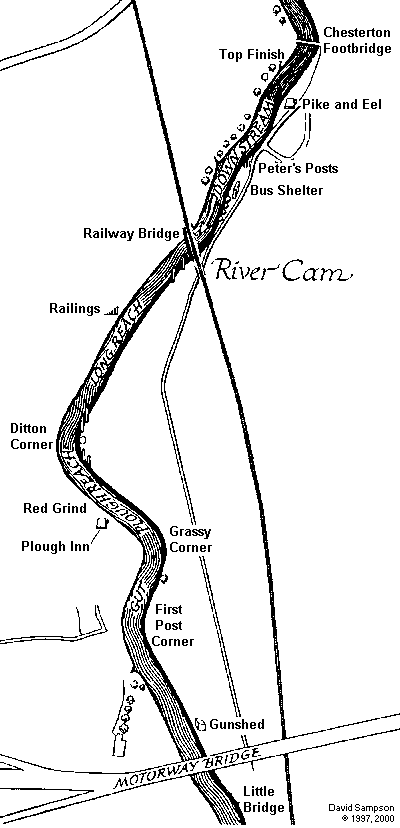

Contact | ©
Contact | ©
$Date: 2009-03-26 09:37:50 +0000 (Thu, 26 Mar 2009) $

This map was created in 1997, adapted from CUCBC. No Google Maps in those days.
| Landmark | Interval [m] | Total [m] |
|---|---|---|
| Bait's Bite Lock | - | -390 |
| Little Bridge | 390 | 0 |
| Motorway Bridge | 180 | 180 |
| Gunshed | 60 | 240 |
| Entry to First Post Corner | 340 | 580 |
| Exit of First Post Corner, Start of the Gut | 90 | 670 |
| End of the Gut, Entry to Grassy Corner | 100 | 770 |
| Exit of Grassy Corner, Start of Plough Reach | 150 | 920 |
| End of Plough Reach, Entry to Ditton Corner | 160 | 1080 |
| Exit of Ditton Corner, Start of the Long Reach | 200 | 1280 |
| Long Reach Finishing Post | 300 | 1580 |
| Railings | 210 | 1790 |
| Railway Bridge | 440 | 2230 |
| Sprint Course Start | 320 | 2550 |
| Peter's Posts | 150 | 2700 |
| Pike and Eel | 90 | 2790 |
| Bumps Top Finish | 210 | 3000 |
| Chesterton Footbridge | 60 | 3060 |
This table was created in 1997, using a cycle computer, pen and paper. No wristop GPS in those days.